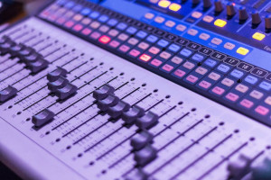

Question 1: Is it better to work with the event object directly when passing it to a function rather than passing what is needed to the function?
Question 2: Are there pre-programmed libraries or something we can include to ensure our scripts are compatible with old browsers and new ones?
Question 3: Do other events exist beyond mouse clicks and keyboard clicks?
Question 4: Is there a general preference in the code authoring community of using event bubbling over event capturing?
